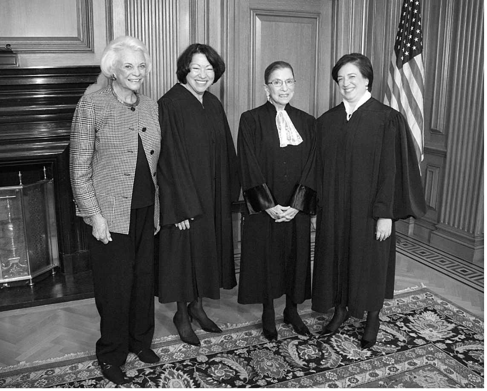
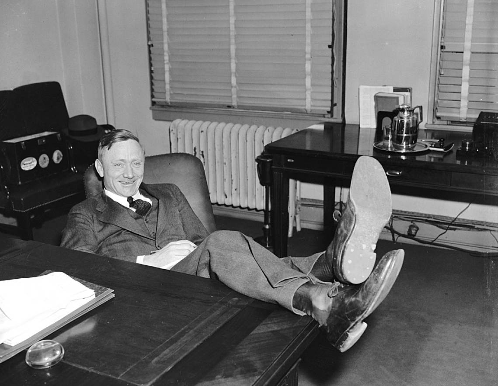

成为一名最高法院大法官，并不需要满足什么正式资格条件。宪法要求担任参议员者年满30岁，出任总统者至少年满35岁并且是“出生于本土的公民”，但对大法官的任职资格却没有设定类似规则。理论上讲，任何人只要被总统提名，并得到参议院多数票确认，就可以成为最高法院大法官。然而，迄今所有进入最高法院的人都是法律人出身，虽然早年间的许多大法官都不是法学院毕业生，但按照惯例，他们都曾在法律专业人士的指导下“读过法律”。（最后一位没有受过正式法学教育的大法官是1941年进入最高法院的罗伯特·杰克逊，他在法学院仅待了一年，就成为纽约州执业律师。）
国会在第一部《司法法》中将最高法院成员人数设定为六人（一位首席大法官、五位联席大法官），随后又五度调整过大法官人数：1807年，调整为七人；1837年，九人；1863年，十人（第十个席位一直空着）；1866年，再次调整为七人；1869年，确定为九人，并延续至今。席位数量的变化，既出自对最高法院工作负担的判断，也与政治有很大关联：国会在1866年减少了两个席位，成功阻止了安德鲁·约翰逊总统任命任何一位最高法院大法官；在尤利塞斯·格兰特总统赢得大选之后又增加到九个席位，是想给新总统提供两次任命大法官的机会。1937年，国会拒绝了富兰克林·罗斯福增加大法官席位的提议，即每当有一名在职大法官年满70岁，而且拒绝退休时，就可以新增加一名大法官，最多可以增加到15人。最高法院的人员规模不太可能再发生变化，不过，有些学者出于对大法官在位时间越来越长、退休年龄逐步增高的不安，最近提出了一个建议：增加一批新的大法官，让最老的大法官转任资深大法官，最高法院的具体工作转交年纪较轻的九个人去处理。

图3 2010年10月1日，在最高法院任职或曾任职的四位女性在艾琳娜·卡根大法官的就职典礼上合影。从右至左，依次为卡根、露丝·巴德·金斯伯格、索尼娅·索托马约尔大法官和退休大法官桑德拉·戴·奥康纳
起初，最高法院成员都是新教徒，不用多说，这些人当然都是白人男性。最高法院第一位罗马天主教徒是1836年被任命的第五任首席大法官，罗杰·坦尼。瑟古德·马歇尔1967年被任命前，最高法院的成员都是白人，1981年上任的桑德拉·戴·奥康纳则是第一位女性大法官。自那以后，最高法院的成员结构慢慢地越来越反映出这个国家的多元性，虽然反映得并不全面。瑟古德·马歇尔1991年退休后，他的席位由第二位非洲裔美国人克拉伦斯·托马斯填补。1993年，露丝·巴德·金斯伯格进入最高法院，成为奥康纳之后的又一位女性大法官。2010年10月4日，最高法院新开庭期首次召集时，审判席上已有三位女性（金斯伯格、索尼娅·索托马约尔和艾琳娜·卡根）；一名非洲裔美国人，托马斯；一名拉美裔，索托马约尔；六名天主教徒；三名犹太人。约翰·保罗·斯蒂文斯2010年退休时，是最高法院唯一一名新教徒。1916年，首位犹太人大法官路易斯·布兰代斯被提名时，曾激起轩然大波，之后许多年间，最高法院只保留了一个“犹太人席位”。 [37] 但是，到艾琳娜·卡根2010年加入最高法院、成为院内三位犹太人大法官（另外两位是金斯伯格和布雷耶）之一时，被提名人的宗教背景通常已被视为无关紧要。
大法官的原籍问题也是如此。过去有许多年，总统们一直努力保持最高法院成员在地域上的平衡，认为最高法院应通过来自本国不同地区的成员，反映不同的利益和视角。但是，当卡根作为第四位纽约客（另外三人是斯卡利亚、金斯伯格和索托马约尔）进入最高法院时，地域问题早就不是影响大法官提名的重要因素了。邻近纽约的新泽西州还出了第五位大法官小萨缪尔·阿利托。
当代最高法院还有一个显著特点：大法官们的职业背景不够多元化。2006年，桑德拉·戴·奥康纳退休，阿利托补缺后，最高法院全体成员在被任命为大法官前，都是上诉法院法官，这种情况在我国历史上还是第一次。艾琳娜·卡根2010年被提名后，打破了这一局面。她担任过联邦首席政府律师，之前还做过哈佛法学院院长，是最高法院39年来（自1971年提名的威廉·伦奎斯特和小刘易斯·鲍威尔算起）首位没有过法官经历的成员。 [38]
过去，很少有人能预测到最高法院成员会出现这种职业背景单一化的局面，那时候，大法官们都从行政分支和立法分支的高级官员中产生。以沃伦法院（1953—1969）的成员为例，其中有三人做过联邦参议员（雨果·布莱克、哈罗德·伯顿和谢尔曼·明顿，只有明顿曾在下级法院任职），另有两人担任过联邦司法部部长（罗伯特·杰克逊和汤姆·克拉克，两人都未担任过法官）。其他人都在地方、州或联邦层级担任过民选官员。首席大法官厄尔·沃伦当过三届加利福尼亚州州长，1948年代表共和党竞选过副总统。他之前也没有过担任法官的经历。
对最高法院成员任前履历要求的变化，在相当程度上取决于当代大法官任命和确认程序的政治关切。与以往相比，提名与确认程序更多地成为就最高法院的职能和大法官应秉持的宪法价值观进行全国性辩论的场合。当然，围绕最高法院的提名环节，一直存在政治冲突——自乔治·华盛顿以来的总统们都知晓这一点，富兰克林·罗斯福驯服“不听话的”最高法院的努力则堪为例证。但是，最近几十年间，政府内分歧扩大，国会党争日益严重，最高法院深度卷入引发分裂的社会议题之争，再加上法院内部势均力敌的意识形态对立，导致对任何一位大法官的提名都变得分外关键。再考虑到具有党派偏见的人煽动全方位媒体炒作的能力，很容易理解的是，总统在填补最高法院空缺时，自然不希望遭遇任何意外，无论是在确认环节，还是被提名人未来在最高法院履任后。了解一个陌生的被提名人的最便捷、稳妥，尽管不是万无一失的途径，就是他的司法从业记录，这些记录可以显示潜在候选人对具体法律议题的立场和裁判技艺。事实上，总统通过任命一位在任法官，可以实现双重目的：既能选择一个公认的靠得住的人，又可以化解关于提名受意识形态主导的联想。
但是，如果总统拟通过任命最高法院大法官，推进国会尚不认同的某项议程，那么，无论被提名人的资格、履历多么优秀，都极有可能遭遇强烈阻击，尤其是在最高法院内部的平衡容易打破的情况下。1987年，罗纳德·里根总统提名罗伯特·博克法官引起的那场“大战”，常被称为导致当代“确认乱局”的事件。尽管或许只有程度之分，并无实质区别，但是，在媒体强烈的聚光灯下，对博克的提名之战，最终沦为一场政治惊悚事件，留下一笔改变日后提名处理模式的惨痛教训。
对博克的提名，具备酿成一场政坛纷争的所有要素。之前那年11月，参议院改由民主党掌控，里根行政分支失去了参议院的支持，在政治上处于弱势地位，外交政策上又为“伊朗门”丑闻苦恼不已。博克法官做过多年法学教授，后来被行政分支作为最高法院大法官预备人选，放到联邦上诉法院工作。他是一个直言不讳的保守派人士，时常公开撰文反对当代宪法的各种理念。博克被提名填补的席位，之前属于温和保守派刘易斯·鲍威尔，鲍威尔当时是“摇摆票”大法官，在不同立场势均力敌的最高法院，起着重要的平衡作用；所以，如果博克成为大法官，意味着在最高法院内部，堕胎和平权措施问题的力量对比将发生变化，因为鲍威尔至少在一定程度上支持过堕胎和平权措施。
自由派团体和民主党参议员中的大佬联合起来打算挫败对博克的提名，宣称博克是“非主流”人士。 [39] 在为期一周，并被电视全程直播的参议院司法委员会听证会上，被提名人正中反对派的下怀：他竭力为自己“原旨主义者”的司法理念辩护，激烈批评最高法院利用宪法条文中不存在的隐私权，维护夫妻避孕权和女性堕胎权的做法。毫无疑问，对罗伯特·博克的提名以58票反对、42票赞成遭到的挫败，阻止了最高法院迅速的保守化转向。来自位于加州的联邦上诉法院的温和保守派人士，安东尼·肯尼迪法官，最终通过确认，得到这一席位。他支持堕胎权，并且与博克截然相反的是，他也坚定支持宪法第一修正案确立的言论自由权。2001年9月11日发生的恐怖袭击之后几年，肯尼迪多次加入最高法院多数方，驳回布什行政分支单方面对敌方战斗人员制定羁押政策的权力诉求。罗伯特·博克作为局外人，强烈谴责了这些判决。
下述争辩，已断断续续持续多年，即参议院是否应在最高法院被提名人的专业资质符合要求时，抛开参议员们的意识形态倾向，尊重总统的选择。在理论层面，这样的争论仍在持续。而在实践层面，对博克的“确认大战”已经解决了这一问题。虽然博克法官的资质明显合格，参议院还是坚持以意识形态为标准，评估他的专业资质；但是，在意识形态方面，博克的表现却让大多数参议员感到惊讶。司法委员会审查完博克的听证会发言后，在近一百页的报告结尾写道：“由于博克法官对宪法与审判职责本身的狭隘视界，批准对他的确认，极可能对未来的国家需求不利，还会扭曲垂范久远的宪法承诺。”
博克提名受挫后，他的支持者们警告总统，今后再不能提名一个在当下重大议题上留下太多“书面记录”的人出任大法官。但是，之后的事实证明，这样的预测并不准确。例如，出任联邦上诉法院法官前，露丝·巴德·金斯伯格曾是民权律师界的领军人物，1970年代，她在最高法院打过六场官司，在说服大法官将性别歧视视为宪法议题方面，起到了至关重要的作用。她的律师执业记录亦即书面记录，数量庞大。但她还是以96票赞成、3票反对的表决结果，轻松快速地通过了参议院的确认。与提名博克时的一点区别在于，白宫和参议院当时都在民主党控制之下。另一点不同则是，在上诉法院工作12年间（罗伯特·博克也曾在同一家法院与她短暂共事），她已经证明自己是一位审慎、温和的法官。此外，她当年倡导的理念，多数已被最高法院接纳，所以她当然不可能被视为“非主流”人士。
尽管金斯伯格1993年在司法委员会接受听证时，政治上占据优势，她还是开创了一项先例，并改变了之后的确认听证会模式：她只在最低限度内与参议员们谈及自己的司法立场。她拒绝回答任何抽象问题，又以不应就可能诉至最高法院的议题表态为由，回避了许多具体问题，而且在此过程中，她没有否认自己已公开表态过的立场。之后的被提名人，大都采取这一策略回避问题，导致如今的确认听证会成为没什么看头的例行公事。（金斯伯格在上诉法院的同事，安东宁·斯卡利亚，在1986年的最高法院确认听证会上采取了一种更极端的方式：“什么也不说”策略。他告诉参议员们：“我想我不宜回答任何与最高法院具体判决有关的问题，哪怕是‘马伯里诉麦迪逊案’那样的关键判例。”博克的听证会之后，人们希望被提名人至少能对最高法院历史上的重要先例保持尊重。）
2005年被提名出任首席大法官的约翰·罗伯茨，也留下过不少书面记录，他年轻时在里根治下的司法部和白宫从事法务工作期间，撰写过不少备忘录和分析报告。这些书面记录中，有些内容对民权诉求不屑一顾，还有一些流露出明显的保守派立场。但是，罗伯茨——他也与博克、金斯伯格在同一所上诉法院共事过——在确认听证会上也打定主意回避关于本人立场的提问。罗伯茨在开场陈述中说，与政策制定者不同的是，法官应受先例约束，并对自己的角色保持“适度谦卑”。他告诉参议员们：“法官就像裁判。裁判不会制定规则，但要适用规则。”并非所有参议员都打消了疑虑，但效果已经足够。参议院最终以78票赞成、22票反对，通过了对第十七任首席大法官的确认，反对票全部来自44名民主党参议员，即其中的一半人投了反对票。 [40]
尽管总统和参议员们高度重视最高法院的提名环节，被提名人上任后的表现，还是时常出人意料。政治学家把这种现象称做“意识形态转向”，认为这样的情况很常见——甚或已成定律，而不止是例外，有些大法官不止一次地发生意识形态转向。近几十年来最典型的例子是哈里·布莱克门，他1970年被理查德·尼克松总统任命为大法官时，被视为一个可靠的保守派人士；各方面迹象显示，他在意识形态上也与童年好友，刚刚被任命为首席大法官的沃伦·伯格高度一致。但是，光阴似箭，等到布莱克门24年后退休时，他已是最高法院最具自由倾向的大法官——可以肯定的是，当时的最高法院已比他刚加入时保守多了，但是，他在几乎所有重大议题上都“向左转”的变化，还是很让人震惊。 [41] 约翰·保罗·斯蒂文斯，被提名时也是共和党人，他在长达34年的任期中，也变得更趋自由化。同样由共和党总统任命的桑德拉·戴·奥康纳和戴维·苏特也发生了同样的转变，但程度略轻。在最高法院变得更趋保守的大法官数量要少得多。这或许是因为1967年到1993年间，没有民主党总统提名过大法官，可能“向右转”的大法官自然不多。近些年最明显的大概要算约翰·肯尼迪总统1962年任命的拜伦·怀特。
如何解释这些心智成熟、职业经历丰富的人观念上发生的这种实质性转变？（布莱克门进入最高法院时，已经61岁，而且已在联邦上诉法院担任了11年法官。）罗伯特·杰克逊担任富兰克林·罗斯福麾下的司法部长时，曾认真观察过最高法院的人事变化。1941年，他在自己被任命为大法官前出版的《为司法至上而斗争》一书中，就此问题发表了看法。在书中，他问道：“为什么最高法院对被任命者的影响，要远大于被任命者对最高法院的影响？”事实上，杰克逊本人的立场也是在最高法院发生转变的。过去，他是总统权力的坚定拥趸，后来却对这项权力的运用渐生怀疑，在1952年的一起案件（即“杨斯顿钢铁公司诉索耶案”）中，他发布的一份意见设定了限制总统权力的框架，至今仍被广泛引用。 [42]
回到杰克逊之前提出的问题。在最高法院独一无二、大权在握的体验，会带来新的视角，动摇固有成见——显然并非所有人都是如此，只是部分人。有人研究了1969年至2006年间，共和党总统任命的12位大法官，发现被任命者之前在联邦行政分支的工作经历，与他们出任大法官后意识形态的稳定程度有强烈关联。这12个人中，一半人加入最高法院前，曾在行政分支实际任职，另一半人则没有类似经历。只有那些没有行政分支任职经历的人，才出现了“向左转”的情况。另一位学者回顾了厄尔·沃伦1953年上任以来的历史，并指出，被提名者获得任命时的居住地点，是识别他们在公民自由问题上“投票态度变化”与否的关键因素。被提名时就居住在华盛顿特区的人，立场一般不会发生转变。而那些来自特区外环线以外的人，立场会更趋自由化。当然，在联邦行政分支工作过的人，绝大部分就居住在华盛顿城内，虽然两者并不完全重合。也许是人到中年后，迁移到新城市带来的新的挑战性经历，才使新大法官更能接受新的观念。
宪法规定，联邦法官与总统、副总统和“联邦全体文职官员”一样，将因“犯下重罪或品行不端”遭到弹劾。尽管已有十余位联邦下级法院法官遭众议院弹劾，并被参议院定罪，而且在刑事定罪后被免职，国会还从来没有解除过一位最高法院大法官的职务。1804年，众议院曾以发表煽动性言论为由，投票弹劾塞缪尔·蔡斯大法官。蔡斯是前总统约翰·亚当斯的热情支持者，他发表的言论，尤其是他在担任巡回法官期间提交的一份批评杰弗逊总统的大陪审团指控，激怒了新上台的杰弗逊共和党人。然而，蔡斯的行为并不构成犯罪，参议院最终也判定他无罪。他在最高法院又工作了七年。这起事件确立的原则是，不认同一位法官的司法行为，并不是正当的弹劾理由。

图4 威廉·道格拉斯，摄于1939年3月20日，当天他被富兰克林·罗斯福总统提名为最高法院大法官候选人。道格拉斯时年50岁，是最年轻的被提名者，他在最高法院的任职年限也最长，1975年才宣布退休
尽管如此，1960年代，仍有许多人呼吁弹劾厄尔·沃伦首席大法官，1970年代，众议院共和党领袖杰拉尔德·福特发起努力，试图弹劾直言无忌的自由派大法官威廉·道格拉斯。福特弹劾道格拉斯的努力，得到尼克松行政分支的支持，内容主要指向这位大法官在审判业务之外的行为，如多次婚姻、出版著作、为杂志撰稿和为私人基金担任董事。当被要求解释这些行为为什么属于应当被弹劾的过错时，福特回答说：“只要众议院多数成员在特定历史时刻认为相关行为属于可以被弹劾的过错，就可以提起弹劾。”众议院司法委员会详尽调查了道格拉斯受到指责的行为，但拒绝建议发起弹劾，弹劾努力最终无疾而终。道格拉斯于1975年退休，他在任时间共计36年，是最高法院历史上任期最长的大法官。造化弄人，就在一年前，理查德·尼克松因面临弹劾而辞职，杰拉尔德·福特成为总统。
最后，想说一下新近出现的一项争论，涉及最高法院大法官终身任职制的利弊。这场争论主要局限在法学学术界，范围也许不会进一步扩大，但颇能说明人口统计学趋势和人们对这一问题的看法。制宪辩论时，法官终身任职制并非一开始就得以确立。托马斯·杰弗逊就反对这么规定，认为法官应当以四到六年为一个任期，可以连任。但制宪者们最终决定，为维护司法独立，法官只要“品行端正”，就可以终身任职，工资也永远不得减少。
然而，时至今日，左右两翼对这项制度都有批判之声；也有学者发出批评，他们声称：当高龄大法官为了显示政治忠诚度，竭力推迟退休时间；当总统为了让自己的政治遗产绵延久远，物色的提名对象越来越年轻时，终身任职制对最高法院的正常运转和国家的政治生活，都产生了不当影响。不用说，现在的大法官活得越来越久，在任时间也越来越长。1789年到1970年间，大法官平均任期为15年。1970年到2005年，平均任期蹿升到26年多。从1994年到2005年，最高法院有11年没有出现一个席位空缺，这也是自1820年代以来，没有发生人事更替时间最长的一段时期。
改变终身任职制的直接方式，就是修改宪法；就算并非全无可能，修宪也将是一项非常艰巨的任务。所以，许多呼吁变革者提出了一套法律方案，希望借此实现同样的效果：继续任命终身任职的大法官，但规定有效任期为18年。18年后，大法官将转入半退休状态，类似联邦下级法院的操作模式。 [43] 半退休状态者可以在只有八位大法官审案且支持和反对票数相同时打破僵局，也可以承担其他司法工作。九位现任大法官一旦空出一个席位，可以由新的被任命者补缺。在这样的制度下，每两年就可以有一名新大法官得到任命。换句话说，每位总统可以任命两名大法官，这样就可以规范现在席位出现空缺时才能任命的不规则情形。没有一位总统会再有吉米·卡特那样的遭遇，在他的任期内，最高法院一个席位都没有空出来。
终身任职制的批评者指出，所有其他借鉴司法独立等美国模式的宪政民主制国家，最高法院法官都没有实行终身任职制。例如，加拿大、澳大利亚、以色列和印度，都设定了固定的年龄限制，而德国、法国、南非的宪法法院法官也有固定任期。50个州当中，只有罗得岛州最高法院法官没有任期限制。对终身任职制的批评，也许一直都不会被公众关注到。但是，它提出了司法独立究竟得靠什么保障这一发人深省的问题：是仅仅靠纸面上的规定，还是靠人民对法院寄予厚望、法院又以公允裁判维系这种信任的国家文化？